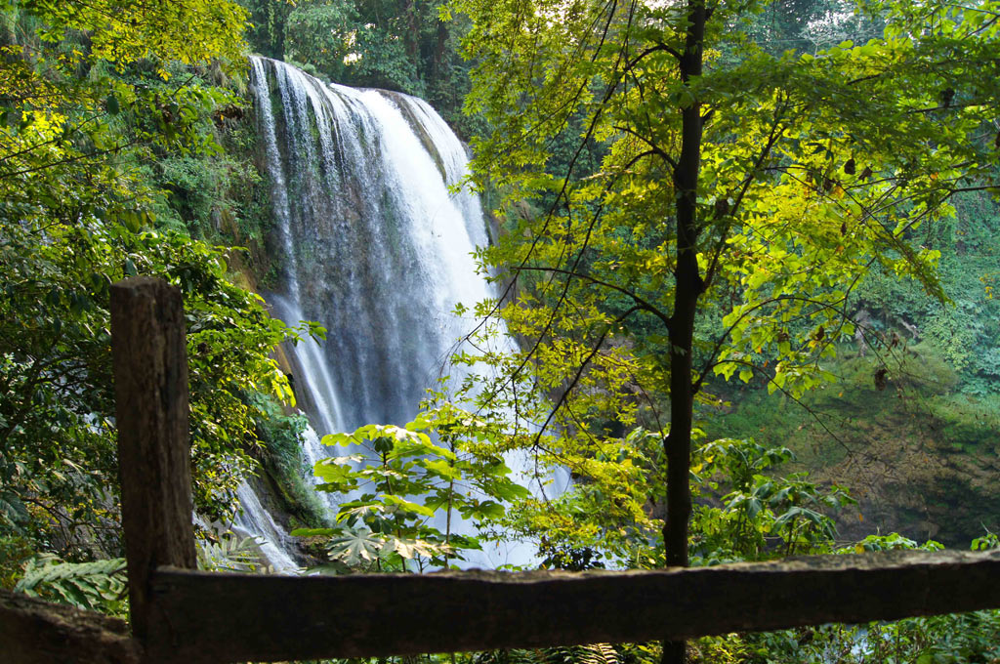
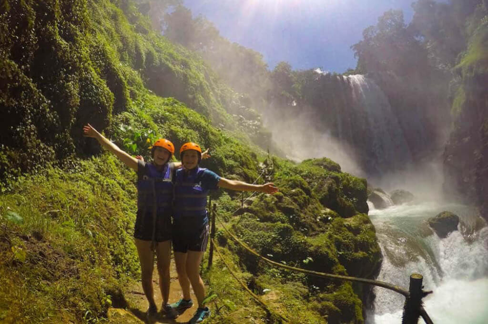
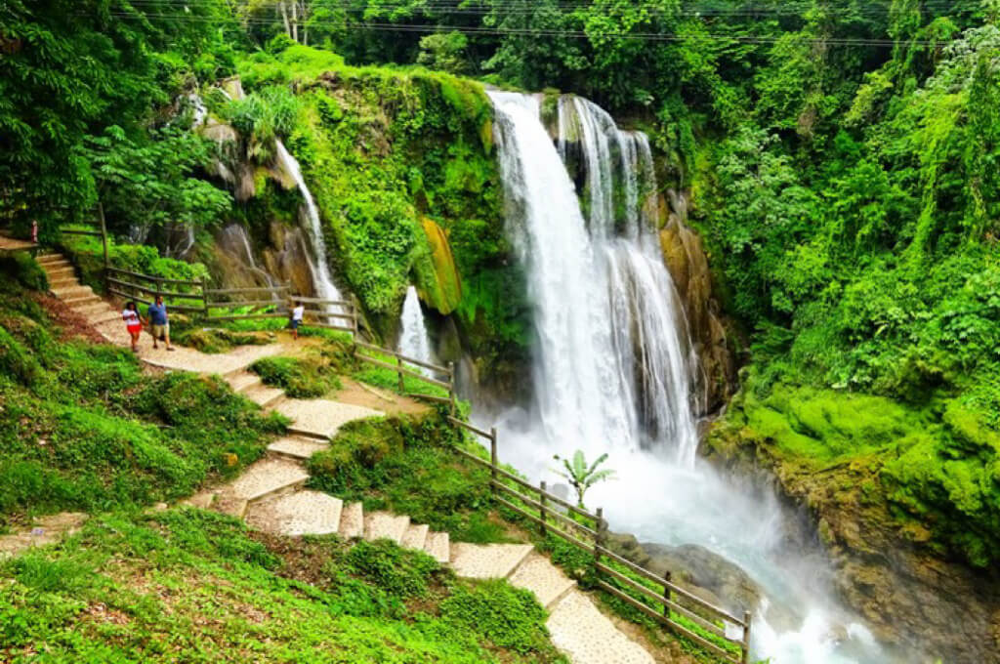

Let's Travel
Cataratas de Pulhapanzak, una maravilla natural en Honduras
Las Cataratas de Pulhapanzak son uno de tantos encantadores destinos turísticos en Honduras. Esta es una imponente caída de agua de 43 metros de altura que se encuentra a solo 17 kilómetros del Lago de Yojoa, un sitio único y con una gran belleza natural, ideal para visitar en compañía de la familia.
Este atractivo de río Lindo ha sido destino turístico de los hondureños desde hace muchos años. Sin embargo, es poco conocido que el sitio posee importantes vestigios precolombinos que se encuentran dentro del mismo balneario. Estos vestigios comprenden una calzada de piedra y una plaza rodeada por cuatro grandes montículos que han sido identificados como estructuras pertenecientes al período clásico tardío (600 d.C. al 900 d.C.).
En el sitio también puede disfrutar del balneario, la deliciosa comida del restaurante, baños y estacionamiento que brindan un servicio que vuelve más cómoda la visita. “Pulha”, como se le conoce, también ofrece algunos de los recorridos más interesantes del área. Puede disfrutar de su canopy de 12 estaciones que lo llevarán en un zigzag hasta la catarata y el bosque cercano.